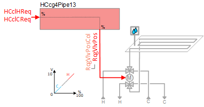
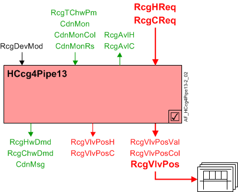
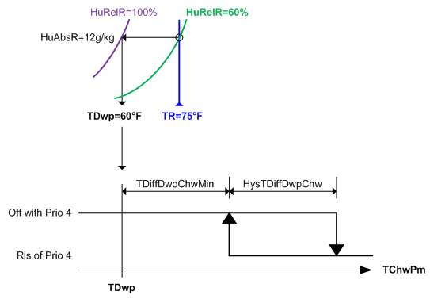
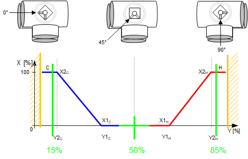
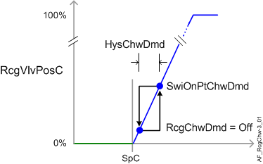

Heated/Chilled ceiling 4-pipe, 6-way valve (HCcg4Pipe13)
 | This application function operates 6-way control valves for radiant ceiling device(s) such as ceiling panel(s) or passive beam(s) supplied with hot or chilled water from separate heating and cooling systems. The valve position is calculated based on request signals (from the room controllers) received for heating and cooling. Multiple panel control is supported. There is an optional binary input for condensation detection. This application function is NOT available for: |
Required elements and how to configure them:
Element | I/O | Signal type |
|---|---|---|
RcgVlvPos "Radiant ceiling valve position" | On-board output, Radiant ceiling valve position 1 | Heating/chilled 4-pipe 6-way or Heat/chilled beam passive 4-pipe 6-way |
Function
The figure below shows BACnet objects associated with this application function. Primary signal flow is summarized as follows:
Radiant ceiling heating or cooling request (RcgHReq / RcgCReq) is received and processed into the output signal for radiant ceiling valve position (RcgVlvPos).
Basic function: Accept request signal from associated room controller and pass it through a device mode logic switch; Output the result as a command to the BACnet object that controls the device.
Note
To reduce the risk of condensation, the modulating water valve can be closed at equipment protection priority by cut-off logic in the condensation monitoring feature and/or dew point temperature monitoring feature (optional; must be configured). The dew point temperature monitoring feature compares the dew point temperature in the room to the chilled water temperature.

| Command or request (or related) |
| Notification of condition or status, or availability |
| Device mode |


Hot/Chilled water valve modulation: In response to heating or cooling demand, this application function modulates the control valve(s) to control the room temperature at setpoint. In response to external triggers for special modes such as warm-up, cool down, or safety conditions, the control valve(s) may be set to off or fully open.
Note
This AF does not perform loop control; its main purpose is to run commands. Loop control processes (for this AF) are managed in the "room" AF(s) that collaborate with this AF to command the end device.
Multiple panel control: The radiant ceiling valve position collection object (RcgVlvPosCol) can reference and control multiple ceiling valve actuators.
Radiant ceiling valve position objects (RcgVlvPos) are referenced by the radiant ceiling valve position collection object (RcgVlvPosCol); this collection object is a common node for any / all RcgVlvPos object(s). The value for RcgVlvPos comes from RcgVlvPosVal.
Condensation monitoring with cut-off switch: Condensation monitor (CdnMon) binary input objects are referenced by the condensation monitor collection object (CdnMonCol); this collection object is a common node for any / all CdnMon binary input object(s).
The CdnMon objects are analyzed using an OR statement. If one or more objects detect condensation, the binary result object (CdnMonRs) switches from 0 to 1 (On). When a single safety trips, all panels turn off (device mode is set to off and cooling valve(s) close).
Parameter EnCdnMonIn must be set to 1:Yes for the cut-off switch to function (see Configuration).
Dew point temperature monitoring with cut-off logic: This AF monitors the primary chilled water temperature (RcgTChwPm) and compares it to the current dew point temperature of the space. (Dew point temperature (TDwp) is calculated elsewhere and received via internal signal.)
When RcgTChwPm is below the dew point temperature by a configurable difference (TDiffDwpChwMin), device mode is set to off at priority 4 and the cooling valve(s) are commanded closed at priority 5. When RcgTChwPm rises above TDiffDwpChwMin plus a configurable deadband (HysTDiffDwpChw), device mode is released.
Parameter EnTDwp must be set to 1:Yes for the cut-off logic to function (see Configuration).

6-way control valve:
In normal operation, the valve tracks the active demand signal.
Avoid end stops: Cooling is fully open at 15% and Heating is fully open at 85%. See figure and also see Configuration.

Device mode: The input signal for device mode is a multistate value.
RcgDevMod supports the following states:
- Off
- Control mode (modulation)
- Fully open, heating
- Fully open, cooling
Heating available status: When the ceiling panel(s) are available for heating, the binary output signal for "Radiant ceiling available for heating" (RcgAvlH) will be "Yes" (available). RcgAvlH is used by the system to regulate heating resources. For example, if there is a call for heating but the ceiling panel(s) are not available because they are already at maximum capacity (because device mode is fully open), then RcgAvlH will signal "No" and the next available heating resource in the temperature control sequence will be activated.
For heating available status to be "Yes", device mode must equal "Control mode" (modulation).
Cooling available status: When the ceiling panel(s) are available for cooling, the binary output signal for "Radiant ceiling available for cooling" (RcgAvlC) will be "Yes" (available). RcgAvlC is used by the system to regulate cooling resources. For example, if there is a call for cooling but the ceiling panel(s) are not available because they are already at maximum capacity (because device mode is fully open), then RcgAvlC will signal "No" and the next available cooling resource in the temperature control sequence will be activated.
For cooling available status to be "Yes", device mode must equal "Control mode" (modulation).
Supply chain interface outputs
CdnMsg is a Boolean condensation message with two possible states:
- Normal (both the condensation monitor input and the dew point monitoring logic output are False)
- Alert (either the condensation monitor input or the dew point monitoring logic output is True)
If CdnMsg switches to Alert in a specified number of chilled beams, the primary plant can take appropriate action. For example, the primary chilled water temperature setpoint can be set to a higher value.
RcgHwDmd supports the following states:
- Off (no demand signal)
- Heating demand (demand signal is active)
- Warm-up (Hot water demand is initiated when plant operating mode is set to warm-up)
RcgChwDmd supports the following states:
- Off (no demand signal)
- Cooling demand (demand signal is active)
- Free cooling (cooling device is in free cooling mode)
Free cooling can be initiated by the central plant when surplus cooling capacity is available. Under certain conditions, the room can take advantage of surplus cooling capacity in the absence of an explicit cooling demand; the room temperature must be below the setpoint associated with the current room climate mode (Comfort, Pre-Comfort etc.). This type of free cooling is different from "economizer" free cooling, which uses an outside air damper.
Supply chain interface inputs
The input signals for hot water availability / chilled water availability are binary values [No|Yes] determined by central command. They are commanded via supply chain group communication for the purpose of TOa-dependent device lockout. The relinquish default value for each is Yes.
RcgHwAvl: If the outside air temperature is above the hi limit value, RcgHwAvl is set to No and the heating valve is closed. (see Central AF SplyHwxx for additional information)
RcgChwAvl: If the outside air temperature is below the low limit value, RcgChwAvl is set to No and the cooling valve is closed. (see Central AF SplyChwxx for additional information)
If for some reason RcgHwAvl and RcgChwAvl are both "No", then device mode (RcgDevMod) is set to Off at priority 9.
The following figure(s) illustrates control modulation and related functions.


Configuration
 Parameters
Parameters
Description | Parameter | Default value |
|---|---|---|
Manual control mode 1:Auto | CtlModMan | 1:Auto |
Condensation prevention | ||
Enable condensation monitor input 0:No | EnCdnMonIn | 0:No |
Enable dewpoint temperature 0:No | EnTDwp | 0:No |
Minimum difference dewpoint temperature/chilled water temperature | TDiffDwpChwMin | 1 [K] |
Hysteresis for minimum difference dewpoint temperature/chilled water temperature | HysTDiffDwpChw | 1 [K] |
6-way valve configuration | ||
Chilled ceiling valve position for value X1 | X1CcgVlvPos | 15 [%] |
Chilled ceiling valve position for value Y1 | Y1CcgVlvPos | 50 [%] |
Chilled ceiling valve position for value X2 | X2CcgVlvPos | 85 [%] |
Chilled ceiling valve position for value Y2 | Y2CcgVlvPos | 15 [%] |
Ceiling heating valve position for value X1 | X1HcgVlvPos | 15 [%] |
Ceiling heating valve position for value Y1 | Y1HcgVlvPos | 50 [%] |
Ceiling heating valve position for value X2 | X2HcgVlvPos | 85 [%] |
Ceiling heating valve position for value Y2 | Y2HcgVlvPos | 85 [%] |
Interlock | ||
Switch-on delay for heating/cooling changeover | DlyOnHCChovr | 2 [min] |
Enable valve position hold 0:No | EnVlvPosHld | 0:No |
Hot/chilled water demand | ||
Switch-on point for chilled water demand | SwiOnPtChwDmd | 4 [%] |
Hysteresis for chilled water demand | HysChwDmd | 2 [%] |
Switch-on point for hot water demand | SwiOnPtHwDmd | 4 [%] |
Hysteresis for hot water demand | HysHwDmd | 2 [%] |
Internal settings – do not change | ||
Temperature difference unit | TDiffUnit | [K] |
Interface
Interface | Description | Type | Ref. | Owned by | |
|---|---|---|---|---|---|
RcgVlvPosCol | Collection of radiant ceiling valve position | ColView | ● | - | |
| RcgVlvPos | Radiant ceiling valve position (1...n) | AO | ◉ | Room segment / Device |
RcgVlvPosVal | Radiant ceiling valve position value | APrcVal | ● | - | |
RcgVlvPosC | Radiant ceiling valve position for cooling | ACalcVal | ● | - | |
RcgVlvPosH | Radiant ceiling valve position for heating | ACalcVal | ● | - | |
CdnMonCol | Collection of condensation monitor | ColView | ● | - | |
| CdnMonRs | Result of condensation monitor 0:Off | BCalcVal | ● | - |
CdnMon | Condensation monitor (0...n) | BI | ◉ | Room segment / Device | |
CdnMsg | Condensation message 0:Normal | BCalcVal | ● | - | |
RcgDevMod | Radiant ceiling device mode 1:Off | MPrcVal | ● | - | |
RcgCReq | Radiant ceiling cooling request | ACalcVal | ● | - | |
RcgHReq | Radiant ceiling heating request | ACalcVal | ● | - | |
RcgAvlC | Radiant ceiling available for cooling 0:No | BCalcVal | ● | - | |
RcgAvlH | Radiant ceiling available for heating 0:No | BCalcVal | ● | - | |
RcgChwDmd | Radiant ceiling chilled water demand 1:Off | MCalcVal | ● | - | |
RcgHwDmd | Radiant ceiling hot water demand 1:Off | MCalcVal | ● | - | |
RcgTChwPm | Radiant ceiling primary chilled water temperature | APrcVal | ● | - | |
RcgChwAvl | Radiant ceiling chilled water available 0:No | BPrcVal | ● | - | |
RcgHwAvl | Radiant ceiling hot water available 0:No | BPrcVal | ● | - | |
RcgSplyChw | Radiant ceiling supply chain for chilled water | GrpMbr | ● | Room segment | |
RcgSplyHw | Radiant ceiling supply chain for hot water | GrpMbr | ● | Room segment | |
Engineering and commissioning
Verify operation for single output and multiple output.
Verify changeover effects and transitions (H/C valve, available and demand signals).
When troubleshooting, check effect of condensate detectors. Verify shut down on condensate detection for single and multiple objects.
Consider controlling the space as separate segments, rather than multiple objects in one segment. This allows the cooling to operate individually in case of shutdown on condensation detection.
6-way valve:
Avoid end stops: Cooling is fully open at 15% and Heating is fully open at 85%. See figure and also see Configuration.